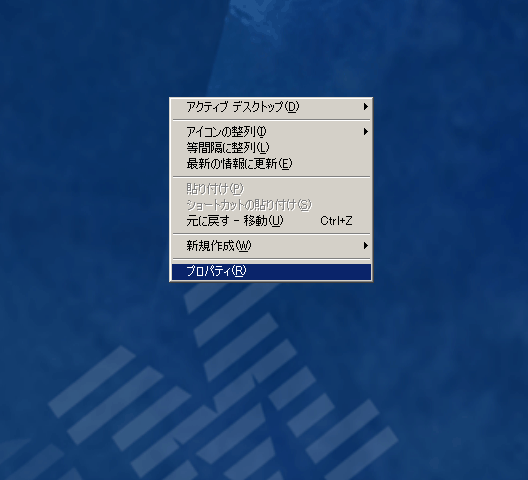
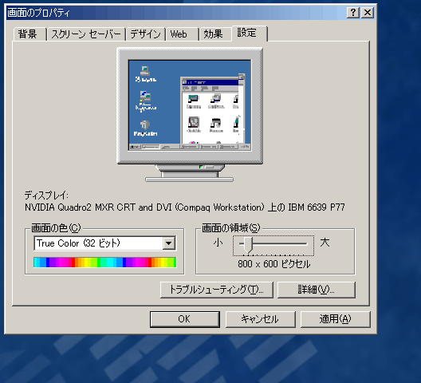
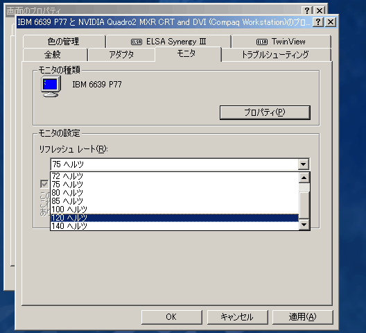
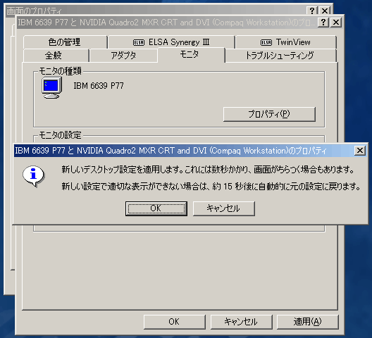
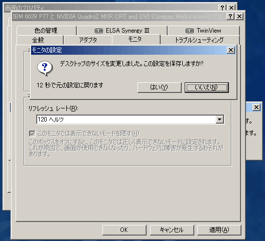

リフレッシュレートの変更
１．画面のプロパティによる方法
マウスの右ボタンでデスクトップをクリックし，「プロパティ」を選びます．

「設定」のタブを選んで，「画面の領域」のスライダを動かして「800×600ピクセル」程度にし，そのまま「詳細」のボタンをクリックしてください．

「モニタ」のタブを選んで「リフレッシュレート」の中から「100ヘルツ」〜「120ヘルツ」程度を選んだ後，「OK」をクリックしてください．

解像度を変更してよいかどうか聞いてきます．ここも「OK」をクリックしてください．

解像度が変更され，一瞬画面が消えるか，ちょっと乱れた後に次のウィンドウが現れます．この画面が現れたら「はい」をクリックしてください．現れなければ（画面がまともに見えなければ）そのまま１５秒ほど待っていてください．

２．GLUTのゲームモードを使う方法
GLUTのゲームモードは，画面の表示解像度，リフレッシュレート，それに色深度（最大表示色数）をプログラムから制御すると同時に，画面をフルスクリーンモードにします．
ゲームモード時の画面設定は glutGameModeString() を使って指定します．引数は設定を示す文字列で，画面を「幅800ピクセル，高さ600ピクセル，32bit カラー，リフレッシュレート 100Hz」に設定するなら，"width=800 height=600 bpp=32 hertz=100" あるいは "800x600:32@100" という文字列を指定します．
この文字列中の演算子には，"=" のほかに "!=", "<", ">", "<=", ">=", および "~" が使えます．"hertz>=100" とすれば，「リフレッシュレートを 100Hz 以上に設定する」ことを要求します．マシンが指定した設定をサポートしていなければ，ゲームモードには切り替わるものの画面設定は変更されません．ただし "~" は ">=" と同等ですが，「この設定が無理なら設定しなくてもいいや」という意味合いを持つので，この演算子を使った設定が行えなくても他の設定は行われます．
glutGameModeString() の実行後，glutEnterGameMode() でゲームモードに入る前に glutGameModeGet(GLUT_GAME_MODE_POSSIBLE) の戻り値が非０であることを調べれば，その設定が可能であることを確かめられます．また，ゲームモードに入った後 glutGameModeGet(GLUT_GAME_MODE_DISPLAY_CHANGED) の戻り値が非０であることを調べれば，画面設定の変更に成功したことを確かめることができます．
なお，ゲームモードに入ると画面はフルスクリーンモードになるので，「ウィンドウ」を作成することができません．したがって， glutEnterGameMode() を使ってゲームモードに切り替えたあとは，glutCreateWindow() 等を使用しないようにする必要があります．またプログラム終了時には，一応画面の設定を元に戻します．これはプログラムを終了させるところで glutLeaveGameMode() を呼び出します．
#include <stdlib.h>
...
#define GAMEMODE 1
...
void keyboard(unsigned char key, int x, int y)
{
switch (key) {
case '\033':
case 'q':
case 'Q':
#if GAMEMODE
/* プログラム終了時にゲームモードから抜ける */
glutLeaveGameMode();
#endif
exit(0);
break;
default:
break;
}
}
...
int main(int argc, char *argv[])
{
glutInit(&argc, argv);
glutInitDisplayMode(GLUT_RGBA | GLUT_DOUBLE | GLUT_DEPTH | GLUT_STEREO);
...
#if GAMEMODE
glutGameModeString("width=800 height=600 bpp~24 hertz>=100");
glutEnterGameMode();
#else
glutCreateWindow(argv[0]);
#endif
...
return 0;
}
ゲームモードにした時にマウスカーソルが邪魔になるようなら，glutSetCursor(GLUT_CURSOR_NONE) で隠してください．もとのマウスカーソルに戻すには glutSetCursor(GLUT_CURSOR_INHERIT) を実行します．
ゲームモードを使わないようにするには，上の "#define GAMEMODE 1" を "#define GAMEMODE 0" に変更して，コンパイル（ビルド）しなおしてください．
ところで，nVIDIA のビデオチップでステレオモードをサポートしているのは，CAD 用とうたわれた比較的高価なビデオカードに採用されるものに限られます（これはドライバだけの制限のようで，一般向けのビデオチップでクワッドバッファステレオを使えるようにするツールもあるようですが・・・）．ゲームモードでも状況は同じで，GLUT_STEREO を指定しても，やはり実行時にエラーになってしまいます．
ところが，nVIDIA 自身が一般向けビデオカード向けに提供している「ステレオドライバ」をインストールすると，ゲームモードにするだけで勝手にステレオにしてくれます．glDrawBuffer() を使って左右の眼用の画像を描き分けたりする必要もありません．このとき視差はドライバの設定（「画面のプロパティ」の「詳細」）で指定できるようになってます．でも，これを使っちゃうと課題にならないので（だいたい演習室のマシンにはステレオドライバ入ってないし），課題はこういうものがあることは考えないでやってください．